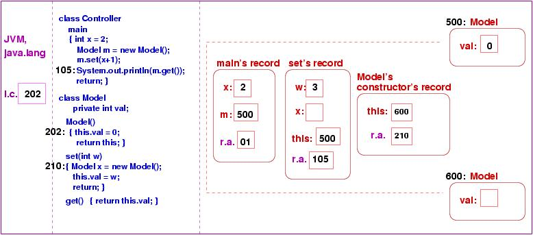

The earlier lecture on execution semantics showed how objects are constructed within a process's storage partition. But the presentation in that lecture simplified the semantics of method call --- the lecture showed the code of an invoked method ``copied'' into the object that was the target of the invocation. In reality, no code is copied into objects; instead, an activation record is constructed and pushed onto the process's activation record stack.
First, recall that a program's storage partition looks like this:
The storage used for data will be used to build a stack at the ``left end,'' and objects will be constructed at the ``right end.'' When a program's main method is started, the partition looks like this:
A record for main is pushed onto the activation record stack; the record holds cells for main's local variables and the return address to which the JVM should jump when main finishes. Say that main calls a method, p. Then, an activation record holding p's local variables and return address is pushed onto the stack:
If p calls q, the same happens:
The pictures show us that
When q finishes, its activation record is popped, and the configuation reverts to
Now, p can finish its execution from the point where it paused to invoke q. When p finishes, its record is popped, and main can finish.
Now we study an example to see how this concept applies to methods associated with objects.
public class Controller
{ public static void main(...)
{ int x = 2;
Model m = new Model();
m.set(x+1);
System.out.println( m.get() );
} }
public class Model
{ private int val;
public Model() { val = 0; }
public void set(int w)
{ Model x = new Model();
val = w; }
public int get() { return val; }
}
When the Java compiler checks these two classes and translates them into .class
files, it makes some small but crucial changes;
the changes are marked by //!:
public class Controller
{ public static void main(...)
{ int x = 2;
Model m = new Model();
m.set(x+1);
System.out.println( m.get() );
return; //!
} }
public class Model
{ private int val;
public Model()
{ this.val = 0; //!
return this; //!
}
public void set(int w)
{ Model x = new Model();
this.val = w; //!
return; //!
}
public int get()
{ return this.val; } //!
}
First, every method is ended with an explicit return statement,
which clarifies when control leaves the method and returns to the method's
caller. Second, within each class, references to the class's fields
(attributes) are prefixed by this. When we study the example's
execution semantics, we will see that this is an extra local variable
that helps associate method code with the object that the method manipulates.
In the previous lecture, we learned that the Java compiler next reformats the code into posfix notation and then into byte code. Because byte code is difficult for humans to read, we will not use the byte-code versions of the two example classes in the example that follows.
When the program is started (java Controller), the JVM and java.lang are loaded into the partition. Then, Controller.class and Model.class are loaded, and the controller's main method is started: an activation record for main is pushed onto the activation-record stack:
As noted earlier, main's record holds cells for its two local variables, x and m, as well as the return address of where execution should continue when main finishes and returns.
The first instruction that executes, at address 102, saves 2 in x's cell:
The next instruction, at address 103, constructs a new Model object. Several steps must be performed:
The constructor method's activation record is pushed onto the stack. It holds cells for the method's local variables (in this case, none), and it holds the return address back to main's code. It holds an additional cell, this, which holds the address of the newly constructed object.
The picture shows that no code is copied into the Model object --- the code stays where it is, and the instruction counter holds the code's address.
Now, we learn why the Java compiler reformatted the assignment, val = 0, into this.val = 0. The value of variable, this, is found within the topmost record of the activation-record stack --- the value is 500. Hence, it is the val variable within the object at address 500 that must be assigned zero:
The this variable removes the need to copy method code into objects.
Now, it is time to return from the constructor method. The return this instruction causes the value in the return-address cell to be copied into the instruction counter and also the value in this's cell to be returned to its destination in main. (In reality, the value of this is copied into a register in the CPU and later it is copied into main's variable m.)
The activation record for the constructor method is erased.
Now, the assignment to m is completed:
Next, it is time to execute the method invocation, m.set(x+1). The evaluation of the invocation proceeds from left to right:
And here is the start of Step 3 --- an activation record for method set is pushed, where its this variable is initialized to 500. Notice that its argument is saved in the variable for formal parameter, w. And, the return address is saved. The instruction counter is reset to the first instruction within the invoked method:
The next instruction constructs a second Model object, and the steps seen a moment ago are repeated. We see a new object constructed and fresh activation record pushed for Model's constructor method:
The constructor executes as seen before, using the same instructions as before, but since this's cell holds 600, the new object is correctly initialized. The constructor returns its address to its caller, and its activation record disappears:
Because the execution has returned to the code for set, and because the topmost activation record holds the variables for set, variable x is correctly assigned:
and the correct val field is reset:
Now, set is finished, and execution returns to main:
Notice that the object at address 600 still rests in storage, even though it is impossible for the application to reference it; the object is garbage, and at a later point in the execution, the garbage collector program within the JVM will examine all of storage and erase all such unreachable objects. (In contrast, languages like C and C++ lack garbage collectors, and the programmer must insert code to explictly erase unneeded objects.)
The next instruction, System.out.println(m.get()), triggers an invocation of get whose this cell holds 500. Once get returns 3, the println method is invoked. This finishes the application's execution.
Although it was not drawn in the above diagrams, each activation record holds its own temporary-value stack for computing arithmetic. If we examine the precise structure of a method's activation record, we would find this:
The temporary-value stack literally grows ``out of the right end'' of the activation record; this lets the temporary-value stack grow as needed to evaluate complicated arithmetic expressions. When a function is invoked in the middle of evaluating a complex arithmetic expression, the activation record for the invoked function is constructed just as if it is resting ``on the top'' of the temporary value stack. This makes it easy to return from the invoked function and finish evaluating the expression.